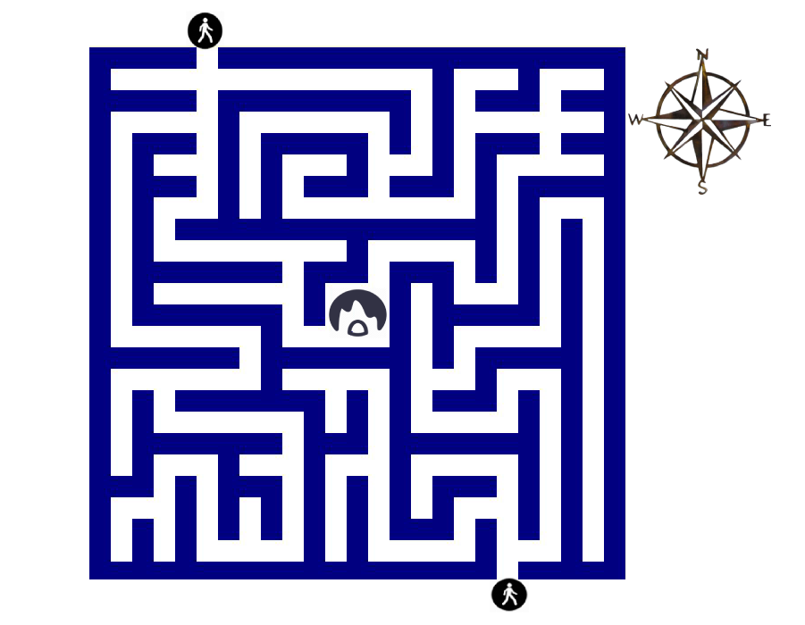

The crocodile is born and lives in the Nile river in Egypt and has sharp teeth and claws. While its skin is so hard that it affected by hard blows/attacks, its belly is slightly more vulnerable. Only two animals can kill a crocodile - the Sawfish (cutting the crocodiles belly) and the Hydrus (by entering the crocodile’s mouth and killing it from the inside). In many bestiaries, crocodiles are said to cry or weep after eating people.
Real or Mythical?
This creature is real!
View the original:
You can view the crocodile illustration in the British Library’s digitised bestiary Royal MS 12 C. xix on Folios 12v - 13.
You receive a letter from a mysterious distant uncle known as Philip de Thaun, who
propositions you with a mission of great importance. His life’s work has been the
cataloging of fantastical creatures. In his old age however, his ability to chase
down these beasts has waned. He charges you with continuing his work: to document
the remaining creatures on his list. An initial tip from Uncle Philip as well as
clues you pick up along the way will guide you in pursuing these creatures. By the
end of the game you have written a bestiary of your own using
all the information you gathered along the way.
Choose an animal below to begin this quest.
Cryptic. But you notice the language alludes to a higher power. Should you seek the help of…
You make your way through the winding streets of Westminster, the stenches of humanity
assaulting your nose as you go. Your plan is to address the King directly, but you can’t
make your way through the castle gates with the title of a lowly artist. As a disguise,
you decide on…
A member of the aristocracy
An alchemist
A member of the clergy
You travel to the monastery. It takes three days and you are very tired by the end of the
journey. As you approach the holy building a monk by the name of David spots you, bringing
you inside for food and shelter. As you eat you begin to speak with David, telling him of
your missions and showing him Philip’s note written on the letter. He stares for a moment,
pondering its meaning.
“It is my opinion, dear friend, that your Uncle may be referring to something of a divine
nature. In all my years of pouring over the texts I have seen but one entity that is above
all of these dominions…”
“And that is?”
“And that is God himself my friend. I cannot tell you how to catch he who knows and sees
all, it would be against my sacred beliefs. There is a woman I know of, a witch, whose
dark knowledge may assist you, but I cannot in good conscience give you her name.”
“I understand. Sorry for wasting your time.”
Brother David leaves the room briefly. You look around and notice a few books on a table
in the corner. You race to the small stack and quickly study the cover of each work. You
hear David’s footsteps reapproaching the room and decide you can only take one book, which
do you take?
The book with an upside down pentagram and wanted poster for a scraggly-looking woman stuffed
inside the cover
The book that appears to have the very creature you seek in gold filigree across the top and
bottom of its cover
The diary and address book of Brother David
Your neighbour, the village’s only doctor, is always the first person who comes to mind
when you need help. You rap on the old man’s door three times, after which you hear the
soft sound of his shuffling footsteps makes their way to the door. He greets you warmly
and invites you inside.
“You know, my child, I am in need of an apprentice.” He says after you exchange some
pleasantries. “I wouldn’t be able to pay you much, but I would be able to teach you the
ways of my trade before I pass on. I never fathered any children, so one day I could leave
my business to you.”
You ponder the idea for a while. You’ve always liked your old neighbour, he’s been kind
to you, treating you like his very own child. You accept his offer, and the quest for those
fantastical creatures fades from your mind.
You walk past a wealthy bath house, where many men and women were busy cleaning themselves
and socialising. You make your way around the back, ensuring that your presence goes
unnoticed. One of the rear windows is open, and hanging from the sill is a fine outfit, one
fit for a member of the aristocracy. Glancing over both shoulders to check you are alone,
you proceed to pull the garment from its perch and begin to dress yourself. At that moment
you hear a shriek from inside the bath house - before you know it, a head has popped out
from the window above you yelling Thief! Thief! You try to run but the garb you had been
trying so frantically to put on catches beneath your feet, causing you to trip. Before you
manage to make it back to your feet, you are surrounded.
As you make you way closer to the castle you pass a travelling showman, he’s asleep by his cart.
You see this as an opportunity to create your disguise. Moving quietly so as to not wake the man,
you rip the red show curtain from its railing and drape it over your shoulders. In the back of the
cart you notice all sorts of props… this pretend spellbook should be perfect!
Your alchemist costume is rudimentary at best but good enough to get you through the castle gates.
You take a moment to absorb your new grand surroundings before continuing on your way. A servant boy
passes by you, eyeing you with curiosity. To diffuse any suspicions the boy might have, you ask him…
A member of the aristocracy
An alchemist
A member of the clergy
You elect to disguise yourself as a member of the clergy, purchasing for yourself a brown
cloak and set of rosary beads from a local merchant. You are spotted almost immediately by
another holy man and directed to go and join the brothers at the scriptorium. You oblige
and follow the man, eventually arriving at a large room full of books, scrolls, pots of ink
and men all writing in a reverent silence.
Your gaze is drawn to a stack of papers on one of the writing tables, naturally you go and
inspect. There’s works on all manner of supernatural creatures: faeries, phoenixes, dragons
and the like, as well as… ah! Unicorns. You pick up a curious piece of paper that has been
folded three times…
That was helpful. You can see that much of the brothers’ work here is centred around many of the beasts on your list, as well as a slew of others. The room is simply full of information on fantastical creatures.
All at once the room is filled with the booming voice of a man yelling, “All rise for the entry of his majesty, King Henry!”
The aura of light coming from the doorway that leads into the scriptorium is obscured by a girthy man with fiery red hair. The monarch began to make his way around the room slowly, inspecting the careful work of the brothers.
“Very fine work indeed, my friends. All this will surely aide me greatly in the capture of these incredible creatures, the taxidermied remains of which will grace my great hall as tremendous hunting trophies, as well as signs of my immense power.”
The thought of this sickens you, but you still need help with your quest. You decide to…
Chastise the King for wanting to help the creatures
Offer up a hunting technique to the King
Offer confessional to the King
Your logic tells you that the woman in the wanted poster is the witch brother David spoke of,
so you snatch the book and make your way out of the monastery’s back door. Running as fast
as your legs will take you, you follow a trail from the monastery to the nearest town.
It’s growing dark quickly so you decide to settle in for the evening at the local tavern.
The place is packed to the walls with men and women seeking merriment and dancing partners.
Hoping to join in, you hail one of the beer maidens to fetch you a drink and something to eat.
While you wait for your order you open the book and examine the wanted poster. Lost in your
work, you don’t notice an old woman sit down beside you.
“I don’t suppose you’re a witch hunter, are you friend?”
You glance to your right at the woman, she has on a dark cloak that covers most of her face.
“No, I don’t suppose I am. I’m seeking the help of the woman in this poster for a… quest.” You
say, kicking yourself for being so honest.
“Well… I hear she is very powerful. If you come with me, I can take you to her.”
Forgetting the meal you have on its way, you leave the tavern with the woman. She leads you this
way and that through the streets, until you can’t remember which way you came from. She stops
abruptly at a small door, before passing through it. You follow her inside and the door slams
behind you, leaving you alone with the old woman in the candlelight.
“I apologise to the mystery, you see I have to conceal my identity in public. That wanted poster
is up all over town and has a surprisingly uncanny likeness to myself, I’m almost impressed with
the artist’s handywork.” As she says this, she removes her cloak and reveals herself to indeed be
the woman from the poster.
“Now for the information you seek, for you see child I saw you coming in my mind’s eye and understand
the quest you are on to be that of continuing one Philip de Thaun’s work, am I mistaken?”
“No ma’am, you are not.”
With a smile on her face, she gestures for you to have a seat.
“Now luckily for you darling, I am somewhat of an expert on the matter of fantastical creatures. It
just so happens that I’m experimenting with a new form of grimoire to catalogue these things. I call
it a brochure, care to take a look?”
You nod your head, a little confused. She hands you what looks like a piece of paper that’s been
folded three times.
“Ma’am, this is fantastic! Do you mind if I keep it?”
Thinking for a moment, she says, “I’m sorry darling, but that’s the only one I have . Maybe if I can find a way to make lots of copies of it you could have one but I… I just don’t want to part with my work.”
Desperate to continue your quest, you…
Push the old lady over, stealing the brochure and running away as fast as you can with the new information.
Offer to do a trade with the woman, citing your skills as an artist.
You decide to take the book that has the depiction of the creature you seek, after all,
surely that holds the most useful information. You stuff the book inside your coat and wait
for brother David to return, as though nothing had happened. The monk remains with you awhile
and offers for you to stay the night, an invitation you readily accept as the weather outside
has turned foul.
LATER
After you’ve washed for the evening, you make your way into bed. You keep a lit candle by your
bedside to assist your reading. When you open the book, you...
Notice a woman’s address written inside the cover, with the words ‘Witch, Expert’ next to it.
Notice that there is a chapter specifically on unicorns.
Feel guilty about stealing the generous monk’s possessions and decide to return the book in the
morning.
You grab the monk’s diary and stuff it into your coat before he returns. After supping with brother
David you thank him for being such a gracious host and tell him you must take your leave of him and
return home. Following a trail behind the monastery, you make your way to a small wooded area where
you won’t be disturbed. There, you sit and open the diary in your lap. Pilfering through the pages
you are initially confused… then terrified. It wasn’t a diary at all, it was a manual for conducting
satanic rituals. Each page was full of Latin verse designed to summon numerous demons, incubi and
succubi. You can’t stop flipping back and forth through the pages, until you come across one that has a
method for human sacrifice. On seeing that, you snap the book shut and decide to bury it. Right before
you stand up however you hear a hissing voice coming from behind you…
“It was a shame you had to leave so soon. I see you read my book. At least now you know what happens next.”
The boy shows you to a garderobe in the castle. You thank him and wait for him to leave before
settling in for… well you know what. As you take your set above the hole in the wooden plank
you hear a creak. Then you hear a crack. The next thing you know the entire apparatus has fallen
into the moat below, taking you, your *waste* and part of the castle wall with it.
The servant boy takes you to the royal laboratory, high in the castle. Once alone there, you
begin to rifle through old books and scrolls. In a stack of papers on the desk, you find one
that has been folded three times…
That was helpful! You continue to go through the royal alchemist’s things, being careful not to knock over any of his glass distilling apparatus. On the highest shelf in the corner of the room you find a book of potions. Aided by the old library ladder, you pluck the book gently from its dusty perch. You open the weighty tome and flick through its translucent pages. You see a few potion options that may be of use to you, which do you decide to create?
A speed potion
A sleeping potion
A charisma potion
The boy takes you to the King’s counsel room, where he and many other members of the court are
conversing about taxes, land and the Norman invasion of times gone by. You walk timidly into
the room and as people notice your presence they grow quiet.
“And who might you be there, child?”
Slightly afraid, you reply, “A friend, your majesty.”
You see the King notice the prop spellbook under your arm and walks over to examine it.
“Ah, you’re the alchemist from Normandy I sent for! I never would have guessed, I couldn’t hear
it in your accent.”
Thinking quickly you reply, “Not exactly sire, I am said alchemist’s apprentice, he sent me in
his stead. I was raised here in Britain so I don’t have the French accent.”
The King appears slightly displeased that the person standing in front of him is no more than an
apprentice, he was hoping for an expert.
“Well I hope you don’t mind me asking, but may I see the contents of your book there? For
verification purposes.”
Without thinking you hand the book to the King, who opens it and begins to flip through the
pages. You see an enraged look growing across his face.
“It appears..” the King bellows, “...that the person standing before us is an imposter, most
likely trying to pilfer me for money! The book I hold in my hands is entirely blank, except
for the ornate cover. Guards, seize this con artist!”
You push the woman as hard as you can, hoping she’ll fall to the ground, allowing for you to
make a swift getaway with the… brochure. Unfortunately, it appears she has enchanted feet that
plant her firmly on the ground at all times. Infuriated at your rude behaviour she casts a hex
on you, causing you to turn inside out.
“You know, I happen to be an artist. I could help you reproduce your work many times over,
so you have copies to share with people. Perhaps I could offer my services in exchange for
some help?”
After briefly considering, the witch responds, “Why that sounds fantastic to me! How about
this: in exchange for your services, which I won’t engage you for until your quest is complete,
I shall offer you one of three sacred objects to assist you on your journey.”
The witch lays out some options on her crafting table, which do you choose?
An enchanted spear
Magic spices
Charisma potion
You notice a woman’s name and address written inside the cover of the book. Next to her details
are the words, ‘Witch, Expert’. How interesting. It must be for the woman that brother David
spoke of. You remember the wanted poster in the book with the pentagram. In the dead of night
you sneak downstairs to retrieve the poster from the other book. Folding it carefully, you put
it in your pocket for later and return upstairs to your bed chamber. You will set out for the
nearby town in the morning.
[PROCEED to BEGINNING of WITCH STORYLINE]
You turn to the chapter on Unicorns. Truth be told there is little there you didn’t already
know. The one useful piece of information that you gleaned from its pages was that Unicorns
cannot be caught by traditional means, and that they have striking similarities in their nature
to Jesus Christ. You fail to see how this is beneficial to you and in a huff of futility, decide
to consult someone else for advice in the morning.
[BACK to KING/MONK/DOCTOR mechanic]
You notice a woman’s name and address written inside the cover of the book. Next to her
details are the words, ‘Witch, Expert’. How interesting. It must be for the woman that
brother David spoke of. You remember the wanted poster in the book with the pentagram.
In the dead of night you sneak downstairs to retrieve the poster from the other book.
Folding it carefully, you put it in your pocket for later and return upstairs to your bed
chamber. You will set out for the nearby town in the morning.
The rage you feel inside boils over, you simply cannot stand the idea of this man killing
innocent creatures, just to hang them as hunting trophies! It’s despicable.
“How dare you even attempt something so cruel, sir! These creatures should be preserved
and documented, not butchered for status. You should be ashamed of yourself.”
The King’s gaze falls directly upon you, in his eyes you can see a rage and contempt that
equals your own.
“How dare I!? How dare you, brother… brother… why I don’t even know your name, in fact
I don’t recall ever seeing your face before! Not only are you an agitator, you are an
imposter as well! Guards, seize this wretched soul and send them to the gallows!”
Thinking quickly, you call for the King’s attention. Recalling what you read in the folded
paper, you offer up a hunting technique to the King.
“And you say this is for the Unicorn, of all creatures? Well child, if you knew anything at
all you would be aware of the fact that the Unicorn cannot be caught by conventional means.
I have had my best men on the hunt for one for the better part of two years and they have
yielded me no results. Tell me, how do you propose one would capture the beast?”
Now is your chance to trick the King into helping you. His extensive resources would make your
task a lot easier.
“If it’s alright with you, your majesty, I would prefer to tell you in private, as this
information is proprietary highly secretive.”
The King ushers you into an antechamber behind the throne room to speak in private. You decide
to…
Hold the hunting technique for ransom
Tell the King the real technique
If you had read the witch’s brochure properly you would have noticed that the Unicorn can’t
be caught by normal means, and either way your quest is not to harm the animal, it is to
document it and ensure its protection… odd choice there friend.
You choose a sachet of frankincense-based magic spices. Thought the instructions on the back
say nothing about Unicorns, it does mention that it can enhance the resurrection process of a
creature known as the Phoenix. Unfortunately however, the choice you have made won’t assist
you very much in catching the current creature you’re after.
The charisma potion you have selected from the table is designed to improve your ability to
persuade and engage people. After reading the label less than carefully, you consume the whole
bottle.
The witch claps her hands together excitedly, “Fantastic choice! The charisma potion is a
personal favourite of mine. Now, if I remember correctly, we left the tavern before you were
able to eat and drink! I feel so rude for dragging you away, please allow me to give you some
supper.”
She ushers you into the next room, where a young girl is standing above a stove, stirring a
pot of soup. You take a seat next to the old woman at her kitchen table and the girl brings you
each a bowl of soup and a hunk of bread, before sitting down herself.
“Traveller, this is my daughter, Petunia. Petunia, this…”
You quickly interject, “A friend, I don’t have a name.” The pair of women look a little puzzled,
but quickly move on. As you listen to the idle conversation, you can feel the charisma potion
beginning to work. You remember the methodology written about in the brochure for capturing the
Unicorn and decide to enlist the help of the witch’s maiden daughter. The charisma potion
compels you to…
Pay Petunia a compliment
Make a move on Petunia
Ask Petunia for a favor
If you had read the brochure correctly, you would have realised that nothing is as fast as
the unicorn… not even an artist hopped up of speed potion. This potion will not be useful
to you. Try another.
You create a sleeping potion, a very potent one at that. You pour the contents into a glass
flask and stopper it with a cork. Tucking the flask into your jacket pocket you make your way
as fast as you can out of the alchemist's laboratory and into the castle yard.
Unfortunately, however, you are incredibly clumsy. You trip over a bucket of apples and send
them rolling across the dirt. As you hit the ground the flask flies from your pocket and
smashes, freeing the potent sleeping potion. You see its effects begin immediately.
Within 30 seconds the entire castle has been put to sleep by the effects of the concoction,
including yourself. As you failed to read the instructions carefully, you missed the fact
that the sleeping potion’s effect lasts for 100 years.
Until then, old timer.
You concoct the charisma potion and stow it in your jacket pocket before making your way out of
the alchemist’s laboratory. After reading that brochure you decide to seek the help of another,
the woman who wrote it. You recall her address written on the last page and set out on your
journey.
The woman’s house was a small, rickety set up, right in the heart of the town. You attempt to
knock gingerly on the small front door but before you knuckles can meet the wood of the door
panel, it swings open, revealing a small but sweet looking old woman. She ushers you into the
next room, where a young girl is standing above a stove, stirring a pot of soup. You take a
seat next to the old woman at her kitchen table and the girl brings you each a bowl of soup
and a hunk of bread, before sitting down herself.
“Traveller, this is my daughter, Petunia. Petunia, this…”
You quickly interject, “A friend, I don’t have a name.” The pair of women look a little puzzled,
but quickly move on. As you listen to the idle conversation, you can feel the charisma potion
beginning to work. You remember the methodology written about in the brochure for capturing the
Unicorn and decide to enlist the help of the witch’s maiden daughter. The charisma potion compels
you to…
Pay Petunia a compliment
Make a move on Petunia
Ask Petunia for a favor
“You think you can extort me, cretin!?” the King booms. The sound of his yelling can be
heard by all in the room next door. The guards are called to apprehend you and you are
tortured in the dungeon below the castle for treason. Who knew the King had such a short
temper?
“Listen…” you begin. “The technique I have in mind has been developed from reading ancient
manuscripts. It requires the assistance of a maiden, pure of heart. You see, the Unicorn itself
is like a metaphor for Jesus Christ himself; the beast is attracted to maidens because they
resemble the bosom of the Virgin Mother. I believe if we were to find a young woman to fit
the bill, maybe dress her up in a blue cloak like the Mother, we may just catch the creature.”
The King strokes his beard in thought. “I can think of three who would fit this description.
The first is my sublime daughter, Eleanor. She is fair and of a good sort. The second is her
lady in waiting, Daphne. I’ve always known her to be honest and caring. There is also the
servant girl, Mildred, I’ve never known her to steal anything from me at the very least.”
You decide to choose…
Eleanor
Daphne
Mildred
You tell Petunia that her soup is delicious and that she’s a world-class cook. She appears very
flattered. “Listen, you’ve been so kind, if there’s anything I can help you with, I’d be happy
to.”
You explain your plan to Petunia, showing her mother’s carefully written brochure to her. She
seems excited to be able to help you on your quest. As it was prescribed in the brochure, you
make Petunia wear a blue cloak, to mimic the Virgin Mary. The two of you set out early in the
morning and head to the highest peak near the village. It’s a calm, sunny day. You get Petunia
to kneel down on the mountainside in her cloak, arms outstretched, while you go and hide behind
a rock...
Before the two of you know it, a large horn can be seen in the distance… then a small
horse’s body… you can’t believe the lure has worked! The sweet creature gingerly makes its way
over to Petunia, who hugs the Unicorn gently and strokes its mane. While the creature is subdued,
you move from behind the rock. Quickly, you sketch its likeness, to be properly illustrated
later, and jot down any important notes from the experience. The first creature on your uncle’s
list has been found! Congratulations.
Petunia doesn’t take kindly to your advances, no offense but you’re just not her type.
The charisma potion must not have worked.
“Listen, you’ve been so kind, if there’s anything I can help you with, I’d be happy to.”
You explain your plan to Petunia, showing her mother’s carefully written brochure to her. She seems excited to be
able to help you on your quest. As it was prescribed in the brochure, you make Petunia wear a blue cloak, to mimic
the Virgin Mary. The two of you set out early in the morning and head to the highest peak near the village. It’s a
calm, sunny day. You get Petunia to kneel down on the mountainside in her cloak, arms outstretched, while you go
and hide behind a rock...
Before the two of you know it, a large horn can be seen in the distance… then a small
horse’s body… you can’t believe the lure has worked! The sweet creature gingerly makes its way over to Petunia,
who hugs the Unicorn gently and strokes its mane. While the creature is subdued, you move from behind the rock.
Quickly, you sketch its likeness, to be properly illustrated later, and jot down any important notes from the
experience. The first creature on your uncle’s list has been found!
Congratulations.
The King’s daughter agrees to help you and her father with your mission. Eleanor dons a
fine blue cloak and waits on a hillside. Lo! You see a horn in the distance, just peeking
out from behind some trees. The magnificent creature slowly makes itself seen, it’s
beautiful. Unfortunately, it takes one look at Eleanor and bolts - it looks as though the
girl has had the opposite effect, startling the Unicorn away.
Dissatisfied with the outcome Eleanor flies into a rage, cursing the creature, the King
and yourself. Maybe she wasn’t as sweet as the King made her out to be…
The princess’ Lady in Waiting agrees to help you and the King with your mission. Daphne
dons a fine blue cloak and waits on the hillside. It’s a beautiful sunny day and the wind
sweeping across the countryside makes the grass shine in the light. Lo! You see a horn in
the distance, just peeking out from behind some trees...
The magnificent creature slowly
makes itself seen, it’s beautiful. The Unicorn makes its way over, gingerly at first, to
the girl. Daphne opens her arms to greet the creature, taking it in close for a tender hug.
While this is happening you quickly take down some notes about the creature, noting its
form and doing a quick sketch of the animal. Thankfully, you were able to speak to Daphne
in private before commencing the operation and you and her agree to allow the creature to
escape before the King’s men can butcher it. As for yourself, you run into the trees,
remaining hidden from the King’s guards for several days until the coast is clear.
The King’s servant girl agrees to help you and him with your mission. Mildred dons a fine
blue cloak, borrowed from the Princess, and waits on the hillside. It’s a beautiful sunny day
and the wind sweeping across the countryside makes the grass shine in the light. Lo! You
see a horn in the distance, just peeking out from behind some trees...
The magnificent creature slowly makes itself seen, it’s beautiful. The Unicorn makes its way
over, gingerly at first, to the girl. Mildred opens her arms to greet the creature, taking
it in close for a tender hug.
While this is happening you quickly take down some notes about the creature, noting its
form and doing a quick sketch of the animal. Thankfully, you were able to speak to Mildred
in private before commencing the operation and you and her agree to allow the creature to
escape before the King’s men can butcher it. As for yourself, you run into the trees,
remaining hidden from the King’s guards for several days until the coast is clear.
Re-reading Uncle Philip’s letter, one name on the list stands out to you in bold lettering:
DRAGON.
You enter a tavern to purchase a tankard of beer. As you sip on your beer, you take your
time mulling over what little you know about Dragons. You realise that you are not the only
person in the tavern this early in the day, and notice three other people.
In the hope of finding out more about Dragons, you introduce yourself to:
- The Knight
- The Bard
- The Merchant
In a dark corner of the tavern sits a Knight with their dusty shield propped against the table.
They seem to be concentrating on a tattered and dirty scroll in their hands.
Hearing your footsteps, they look up to see who's approaching them and seem eager for some
company. Striking up conversation, you find that the Knight is on a quest to find a living example of his House Crest - an Elephant.
Taking a shine to you, the Knight offers you:
- A look at their Shield emblem
- Opportunity to read their scroll
- Join them on their quest as their Squire
Quietly strumming their lute at a deserted table is a charming looking Bard. Known for their
poetic and musical prowess, Bards regale their audiences recounting epic adventures, stories
and sensational news.
Thinking the Bard could have a song or poem about dragons that could help you in your search
for one, you cautiously approach the seated Bard and cough discreetly to get their attention.
Striking up a friendly conversation, you tell the Bard about your search for a Dragon and your
Uncle Philip's mysterious letter.
The Bard, intrigued, tells you "Alas, I have no tales of Dragons to recount, though should you
wish a life of adventure and travel, you can accompany my and learn the gift of my trade"
You can't help yourself and:
- Laugh openly at the Bard's offer to apprentice to them
- Excitedly accept their offer to apprentice to them
Milling about the entrance to the tavern is a richly clothed Merchant. Robed in furs and silk,
the Merchant looks you up and down - your simple but well made clothes indicate there could be
more value to you than first impressions.
As their rich and exotic clothes indicate, the Merchant travels far and wide finding wares to
sell in different towns. You wonder if they have anything for trade that could help you find a
dragon.
You size the Merchant up and offer to trade:
- A spool of unspun wool
- A lute
- A tattered scroll
As you bend over to get a closer look at the Knight's shield emblem, showing an Elephant,
you accidentally hit your head on the table.
Your head wound is severe, and you fall into a coma, which you never wake from.
End of Journey.
The Knight allows you to briefly read his scroll, before a loud party of ruffians enters the
tavern and he snatches it back.
You managed to read the following before the Knight snatched the scroll back from you:
"...Elephants are the preferred prey of Dragons...venomous breath... winged serpent.”
You think there could be more useful information about dragons on the scroll, so you:
- Offer to buy the scroll
- Steal the scroll
- Offer to make a song based on the Knight's quest and the content of the scroll
Becoming the Knight's Squire sounds like it could provide you with the opportunity to travel to
different lands, meet commoners and royalty alike. This could allow you to capture and document
more of the beasts on Uncle Philip's list, but it could almost certainly leads to dangerous
situations!
You take a moment to make sure you really do want to become a Squire:
- Graciously decline the Knight's Offer
- Accept the Knight's Offer with thanks
You're desperate to see if there's more information about dragons on the scroll, so eagerly
offer to buy it from the Knight for 20 gold coins.
The Knight is greatly offended that you think they would sell their family heirloom which
contains their house emblem. In a rage, the Knight dumps the remainder of his beer on your
head and storms out of the tavern.
Dejected and soaked with beer, you decide Uncle Philip's list of beasts is too much trouble.
End of Journey.
You begin to buy the Knight more and more beer and soon they are drunk! The Knight falls into
a drunken stupor. While they are quietly snoring, your rummage through their belongings and
grab the scroll!
You read the entire scroll passage:
"Noble and wise beasts, Elephants are the preferred prey of Dragons. Armed with a venomous
breath, these devilish winged serpents hold great power of destruction in their serpentine
tails. The only beast the dragon flees from is the roar of the Panther, its sweet breath it
cannot abide by."
Realising there isn't much more information on the scroll, and that the Knight is beginning
to wake up you hastily leave the tavern and run into a Merchant on your way out.
You notice the Knight getting more anxious about the scroll and your interest in it.
Thinking quickly, you tell the Knight you are an apprentice to the Bard in the tavern, and
think their quest and the wonderful scroll would make a captivating song, regaling all who
hear it about the Knight's honour and nobility.
The Knight, warming to your praise agrees.
The Knight lets you read the entire scroll passage:
"Noble and wise beasts, Elephants are the preferred prey of Dragons. Armed with a venomous
breath, these devilish winged serpents hold great power of destruction in their serpentine
tails. The only beast the dragon flees from is the roar of the Panther, its sweet breath it
cannot abide by. "
You realise there isn't much more information on the scroll, and while you sing a song using
the scroll's words, it is so terrible that the Knight becomes angry. They pick you up by the
scruff of your neck and march you over to the tavern Bard, telling you "you have much to learn!".
As the Knight's new Squire, you are eager to set off on the Knight's quest to find a living
Elephant!
As you begin your long journey, the Knight explains to you that Elephants are strong and noble
beasts, however, a major predator of the Elephant is the Dragon.
Over many nights on your journey, the Knight tells you that Dragons prey on Elephants by laying
in wait at paths elephants frequently travel and kills its prey with its strong, coiling tail.
The Knight ponders aloud - they've heard many stories about Dragon's spitting venom from their
mouths, but are unsure if this venom is fatal or harmless.
Finally you reach lands where Elephants are said to roam freely!
Weary from your travels, you decide to camp and recover your strength. While setting up camp,
you hear rustling in the bushes and discover a lone Elephant!
Do you:
- Attempt to capture the Elephant
- Attempt to befriend the Elephant
While you have learnt much about Elephants, it hasn't prepared you for their might and
strength! Outraged at your attempt to capture it, the Elephant tramples you.
You are terribly hurt and don't survive your injuries.
End of Journey.
You slowly approach the elephant so as not to startle it. Sensing a great intelligence and
wisdom in the elephant, you begin to talk to it and retell your travels so far.
Whether or not the elephant actually understands you, it seems to find you as no threat to it's
own life.
You cautiously follow it as it travels well-worn bush paths back to its herd.
As you pass a rocky outcrop, the air suddenly starts to shimmer and a loud thud echoes near the
elephant!
What seems to be a large winged serpent starts to coil its powerful snake-like body around the
elephant! This must be a Dragon!
Thinking quickly, you ready your weapon and spring to action!
Do you:
- Aim for the dragon's head
- Aim for the dragon's tail
You try to subdue the dragon by aiming your weapon at its head! Alas! Though you powerfully
strike the dragon's head, it's powerful tail coils around you, constricting you and crushing
your body.
End of Journey.
You try to subdue the dragon by striking its powerful tail with your weapon. Thankfully your
aim is true and you hit the dragon's tail, causing it to release the struggling elephant.
A great battle begins as you dodge the dragon's tail as it whips around in fury. After what
feels like hours, it seems the dragon is growing weaker and weaker. With one last blow to its
tail, the dragon collapses in a tired heap, unable to move.
While the dragon is incapacitated, you take your time to sketch an illustration of the beast
in your journal, making sure you show its powerful tail. You meticulously record all of the
beast's terrible and wonderful attributes including:
- Harmless venom it breathes
- Strong, coiling tail that holds the majority of the beast's strength
- Its ability to stir up air and make it shine
- Its weakness to the Panther's sweet breath and fearsome roar
- Its preferred prey are Elephants
You are exhausted after your endeavours, but proud that you have managed to find and document
a fantastical beast from Uncle Philip's list to add to your growing Bestiary.
Your open disparagement of the Bard's generous offer deeply offends them.
Overwhelmed by their rage, the Bard smashes their lute over your head, vowing to ensure that
you will never be welcomed in any tavern or songhall they visit in their travels. The Bard
flees the tavern as you lay bleeding on the floor.
For disrupting the peace of the tavern, you are arrested and are detained in the public stocks.
You are pummelled with rotten food every day, your wound becoming infected.
Your infection gets worse and worse, until you eventually fall unconscious and perish while
still in the stocks.
End of Journey.
You cannot contain your excitement at the Bard's offer and enthusiastically thank them for
taking you on as their apprentice.Thinking of all the songs you can learn to help you in your
search for Uncle Philip's beasts, and the strange places you could visit, you throw yourself
into your training.
As the days turn into weeks, turn into months, you realise you have only travelled to two towns
and the Bard's repertoire of stories and songs don't include any beasts in Uncle Philip's letter.
Getting impatient to try and find the Dragon from Uncle Philip's letter, you decide to:
- Strike it out on your own as a travelling Bard
- Leave quietly in the night
You tell the Bard that you wish to end your apprenticeship and make your own way in the world
as a Bard. You get into an argument with the Bard, yelling at them that you have more talent
and skill that they do.
Saddened and deeply hurt by your actions, the Bard releases you from your apprenticeship.
You strike out for a new town and there you make your debut performance in the town square.
Unfortunately you've overestimated your skills and talent and the crowd is merciless.
The crowd heckles you fiercely, and throws all matter of garbage at you.
Completely demoralised, you give up on your plan to travel as a Bard and discover Uncle Philip's
beasts. You spend the remainder of your years as the town's drunken lout.
End of Journey.
You are unsure of how the Bard will react to you asking to end your apprenticeship early,
so you decide to sneak away in the middle of the night while they are fast asleep.
Bitter at how your apprenticeship was little more than indebted servitude, you decide to steal
the Bard's lute and all their coins, to cover all the work you have done for them.
Under cover of darkness you make your way to the next town with your lute and loot. Reaching
the town in the morning, you decide to find a tavern to have a drink and sell your stolen wares.
You offer the merchant a small spool of rough, unspun wool.
The Merchant frowns at the paltry trade offer. They certainly misjudged you and refuse to waste
any more of their time on you when you clearly have nothing of value to offer.
Dejected at your lack of basic skills at trading, you re-think if you're cut out to search for
fantastical beasts from Uncle Philip's list.
You decide to return home and live a quiet life with your family.
End of Journey.
As you tell the Merchant of your search for a dragon to complete Uncle Philip's bestiary, you
spot the Merchant eyeing your lute.
Seeing the Merchant's interest in your lute, and realising it would be too bulky to carry on
your adventures, you offer up your lute, inlaid with mother-of-pearl for trade.
The Merchant, always looking for a bargain, offers you two trade options.
You agree to trade your lute for:
- An iron Broadsword
- More information about dragons
You decide to trade your lute for a strong looking iron broadsword.
The Merchant greedily chuckles, snatches the lute and gives you the broadsword.
You pick the broadsword up thinking it would be perfect to help you capture a dragon. Taking a
closer look at the blade, you decide to give it a quick polish with the hem of your tunic.
Giving the blade a brisk polish, you feel a sudden pain in your hand. You look down to see your
hand bleeding heavily. The strong looking iron broadsword, is really an old sword, riddled with
rust and covered in paint to look new. In your bleeding hand is a chunk of corroded blade that
has fallen away.
You spend all your coins on a poultice to heal your cut, unfortunately infection still sets in
and you perish in a fevered state.
End of Journey.
The Merchant seems somewhat disappointed at your choice, but nevertheless honours the trade
and begins to tell you all the information about Dragons they have collected on their trade
journeys.
The Merchant tells you that "Dragons are large, fierce and strong winged serpents that prefer
to hunt elephants in Africa and India, stalking them on the bush tracks the elephants follow.
Despite its venomous breath, a dragon's power lies within its snake-like tail, with unimaginable
power to crush whomever it wishes. It also has the power to stir the air and make it shine.
The only known beast the dragon is afeared of is the vainglorious Panther. The swiftest of all
beasts, the Panther can only be caught with trickery when captivated by its own reflection.
The dragon cowers before the Panther's roar and hides from its sweet breath."
With that, the Merchant begins to pack up their wares, and makes plans to travel further along
their trade route.
You:
- See a travelling hunting party pass by and ask to join them
- Pay for safe passage with the Merchant to India or Africa
You reluctantly pull a tattered scroll from your satchel and offer it to the Merchant to
look at. Though you haven't looked at in a while, you recall the scroll featuring beautiful
illuminated images and lettering, indicating the care and expense taken to create it.
You agree to trade the tattered scroll for:
- A Lance
- A hand mirror
The Merchant tosses you a heavy lance, forcing you to stumble back under its weight.
As you stumble back from the sudden weight of the lance, you trip over your own feet and fall
into the nearby well. As you plummet many metres into the dark, damp well, you wonder about all
the wonderful beasts from Uncle Philip's letter and if you'll ever get the chance to see them.
End of Journey.
The Merchant gives you the old hand mirror in exchange for the tattered scroll. The Merchant
seems smug with this trade, understanding the scroll comes from a noble family. As you step
away and begin to examine the mirror, you notice its handle is heavier than usual. Finding a
latch on the side, you press it, and a small scrap of folded parchment falls out of a hidden
compartment.
The parchment reads "No hunter on swiftest steed can catch the Panther, so quick it is. Fastest
of all creatures on earth, the only means to capture the vain beast is to trick it with its own
reflection and captive it will be." Curious though it is, you decide it's time to continue your
search for a dragon.
As you travel along the road you come to a junction - one path leads East, where a hunting party
is preparing their gear. The other path leads West.
You decide to:
- Ask the hunting party to accompany them on their hunt Eastwards.
- Travel alone towards the West.
You chose the path leading West and continue on your own. You run out of rations a few days
into your travel, and there are no signs of civilisation in the distance. The landscape is
hostile and seems deserted of life or edible plants.
You slowly waste away, losing strength and perish in the wilderness.
End of Journey.
You walk up to the hunting party and introduce yourself and your quest to find a dragon.
They are a rowdy group, but welcome you to their party with open arms.
They mention that while they're excited to help hunt a dragon, they are actually in the midst
of hunting a Panther that has been plaguing their village. The hunters have been chasing the
Panther for days, but it's simply too fast for them to catch! You hatch a plan for the hunters
to trap the Panther using a bit of trickery.
To catch the Panther you:
- Use a spear
- Use a coil of rope
- Use a hand mirror
As the hunting party make camp, you notice that the Panther has circled back. You think it
might try to attack the hunters while they are resting.
Thinking there is no time to lose, you decide to use the spear laying beside you. As the
Panther enters the camp, you jump up with a loud battle cry and throw the spear at the Panther!
Unfortunately, your aim was off and the spear whizzes past some shrubs, missing the Panther
entirely. Before you can blink, the Panther launches itself at you and strikes you down! The
hunters were right - the Panther truly is the fastest beast.
End of Journey.
As the hunting party make camp, you notice that the Panther has circled back. You think it
might try to attack the hunters while they are resting.
Thinking there is no time to lose, you decide to trap the Panther by using the coil of rope in
your satchel. As the Panther enters the camp, you jump up with a loud battle cry and launch
yourself at the Panther's back! A fierce battle begins as you try to bind the Panther with the
rope. Unfortunately all the stories the Hunter told you are true - the Panther is so incredibly
fast you can't seem to get any grip on it as it squirms and moves in your grasp. Before you know
it, the Panther has thrown you to the ground and all you can see is the Panther's cloud of breath
and dark eyes as it pounces on you.
End of Journey.
As the hunting party make camp, you notice that the Panther has circled back. You think it
might try to attack the hunters while they are resting.
Thinking there is no time to lose, you decide to use the small hand-mirror in your pocket and
attempt to trick the Panther by entrancing it with its own reflection.
As the Panther stalks near your sleeping bag, you spring into action and jump in front of the
Panther, angling the hand-mirror into its line of sight. The Panther's normally alert gaze
transforms into a dreamy look as it seems to be transfixed by its own reflection in the mirror!
While it is captivated by its own reflection, you take the opportunity to bind it so it can't
escape. Waking the hunting party you all celebrate at the capture of the Panther!
As you and the hunting party celebrate with beer by the fire, you discuss what you should do
with the Panther now that it has finally been caught and how the hunters can help you find a
dragon.
You decide to:
- Sell the Panther and use the gold to fund your expedition to find a dragon
- Use the Panther to trap a Dragon
As the Panther gazes at its reflection in the mirror, you and the hunting party take it to the
Merchant in town.
The Merchant's eyes widen as they realise the rare creature before it. The Merchant offers a
huge amount of gold for the Panther, you accept, but before the gold can exchange hands, an
argument erupts between you and the hunting party over what share of the gold everyone will get.
As the argument gets louder, you and the hunter's begin to push each other around. A hunter
pushes you and you fall onto the Panther, accidentally smashing the hand mirror. The Panther,
no longer distracted by its own reflection, snarls loudly and attacks you and the hunters as
the Merchant escapes to safety.
End of Journey.
Deciding to use the Panther as bait to capture a dragon, you and the hunters set off to the
arid lands in search of a Dragon. Travelling for several days and nights, you and the hunters
are exhausted by the heat and decide to set up a camp at the base of a hill dotted with small
caves.
In the middle of the night you wake up - something doesn't feel right - and you decide to wander
the camp. As you walk through the camp ground, the Panther begins to stir and wakes. The air seems
to shimmer and shine and before you know it a fearsome serpent with wings appears!
This must be a Dragon! You stand frozen in fear as the Dragon seems to coil up ready to strike at
you. As the Dragon sets to attack you, a fearsome roar stuns you both - the Panther has noticed the
Dragon and as one of its enemies has let out a vicious snarl and a sweet-smelling breath comes from
its mouth.
The Panther manages to break loose from its binding and escapes into the distance as the Dragon
seems frozen by its roar and breath. Taking a deep breath, you cautiously approach the frozen Dragon
for a closer look...
You decide to pursue the Phoenix. You’ve heard of the creature before, but you’ve never seen one in the flesh. A note your Uncle has scribbled at the bottom of the page outlines the address of a local spice merchant. A long arrow stemming from the note indicates that the address and the Phoenix are connected.
You make your way into town and find the man. He is small, and his accent is unlike any you have ever heard before. His stall has the scent of every spice one’s nose could imagine; paprika, frankincense, peppercorns of every variety… the list was extensive. You briefly discuss the mission your uncle has sent you on, the man nods in thought.
“Ah yes, I knew your Great Uncle Philip well. I understand the work he has sent you to complete is incredibly important too. I tell you what, I will be travelling back through India and Egypt to collect more wares for my shop tomorrow. I know both of these places are of great importance to the story of the Phoenix. I would be honored if you were to join me.”
What an opportunity! You decide to follow the man to:
-INDIA
-EGYPT
You go with the man to Egypt. It takes you several months to make your way there and when you arrive at your destination you are informed that it was once the site of ancient Heliopolis. You make camp just outside town with your now close friend, whom you’ve come to know as Anasti.
As the day fades and the sun sets, you see some camels making their way towards you. On their backs are bags and satchels, and they are being led by a small group of men. Though the idea of an unfamiliar group such as this approaching you, Anasti doesn’t appear concerned by their presence.
“More merchants, much like myself. You can tell by their bags. Don’t fear my friend.”
It turns out that the men were in fact merchants, and lovely people at that. They join your camp and the group of you share stories and break bread together. You grow to trust the men and decide to share the details of your quest with them. One of them offers to tell you a story about the very creature you seek, another offers to show you a place in a more remote part of town where he believes some Phoenix feathers may be for sale. The final one offers to show you around town the next day. You decide to…
Hear a the story
Be shown to the feathers
Be shown around town
You travel with your new friend by boat to the exotic lands of India. As you sail towards the port city, disaster strikes. Your ship runs aground on some submerged rocks before you are able to make it to the shore line. After waiting for what feels like hours, some local fishermen spot you and send a dingy out to help you. Once rescued and safely ashore, the men offer you some food and a place to stay. The group of you exchange tales from the high seas, and as the night draws on you begin to trust these men. You decide to share the details of your quest.
Intrigued and eager to help you, the men scramble to offer advice from their homeland. You choose to listen to the man talking about…
Resurrection
Death
Karma
“You see child, the bird which you seek has the ability to be reborn. Every 500 years it flies to the ancient city of Heliopolis to die and be resurrected out of the flames. In your country where the Christian faith prevails there is a belief that the Phoenix is a metaphor for Jesus Christ, who arose after three days and nights. In my religion of Hinduism, we believe that the soul is eternal, and that it can inhabit multiple bodies over the course of eternity. It only makes sense that the Phoenix would be resurrected.”
“At the end of its lifecycle, the Phoenix incinerates itself on a funeral pyre, not unlike what we use here in India. From the ashes the new form begins to grow: first a worm, then a small bird, and finally the Phoenix in all its glory, just as it was before its death. Typically, this all occurred on an altar prepared by a priest in Heliopolis. Before it makes its journey from India to Egypt, the great bird will fly through the frankincense tree, filling its wings with precious spices.”
“In the Hindu religion, we believe in a cycle of cause and effect - that each man or woman’s actions will lead to an outcome that reflects those actions. This then has an effect on the body we inhabit in the next life. In our religion the Phoenix is known as the god Garuda, who represents birth and heaven. Because of his ties to Vishnu, Garuda also represents justice and fighting against evil. Perhaps these righteous causes are the reason the Phoenix continues to resurrect as himself in his holy form.”
After your stay with the fishermen, you continue on your journey with your now good friend, who you have come to know as Anasti. His need to procure spices brings you back across the ocean, to Egypt and the city of Cairo. When you arrive, the pair of you settle at an inn for the evening. There are many interesting and friendly people there, not least of whom is a merchant named Thomas. Upon hearing that you are new to the area, the man offers to show you around the city so you can get your bearings. You gratefully accept before heading upstairs for the rest of the evening.
You go with the man who offers to show you where the feathers may be. You both make your way through the winding streets of what is now known as Cairo, moving farther and farther away from your friends. You stomach begins to turn as you follow the man down a narrow alleyway.
You should have gone with you gut. The man turns of you with a knife, robbing you and taking with him all of your money and most importantly the note from Uncle Philip.
“I’m gonna go and find that bloody bird myself, it’s going to make me rich!” The man growls, before taking off into the city, never to be seen again.
You are left to bleed out in the street, not to be found until the next day.
You sit and look on intently as the man begins his tale.
“There is a magnificent bird, with luminous red feathers that resides in the depths of India. It lives for as long as five hundred years, that is until it commences a tremendous ritual of death and rebirth. When is completes its life cycle, the bird flies through the contorted branches of the frankincense tree, filling its wings with the world’s most sort after and sacred spices. Then, as Spring commences in the city of Heliopolis, a priest covers an altar with twigs and kindling. The Phoenix flies to the city and upon seeing the altar, lights a fire there only to be consumed by it.”
“Seems like an odd thing to do, no?” comments one of the merchants.
“Well it does, until you hear the rest of the story, you twit. Now shut up and listen. Where was I? Oh yes, now the day after the bird has sacrificed its own life to the flame, a small, sweet-smelling worm can be found in its ashes. On the second day, this worm becomes a small bird. On the third, well… the bird takes the form of the Phoenix again. Once this incredible process has taken place, the bird returns to its place of origin, in India. That, my friends, is the tale of the Phoenix.”
You all sit around for a while longer. The merchant who offered to take you for a tour around town informs you that he still intends to go there tomorrow, if you’re interested. You decide to take him up on his offer.
You and your new merchant friend set out for the city of Cairo the next morning. Your friend is very knowledgeable about the history of the area, informing you that the city is built over the site of ancient Heliopolis. He takes you past libraries and bazaars, holy buildings and less than holy ‘massage parlors’. You finally take leave of your friend outside the market stand of an old man, who is selling scrolls and prints of varying descriptions. You approach him and ask if you can go through his wares, a question he answers with a nod and a grunt. There’s parchments about Dragons and Basilisks, even a page or two about Unicorns. You finally find one about the Phoenix.
Map of Heliopolis
Bird watching manual
There’s something familiar about this map, like you’ve walked through its streets before. Come to think of it, you have! This must be the area that the merchant took you through just this morning. How convenient. You study the landmarks in the map, keeping the story of the Phoenix in mind.
Which hieroglyph marks the place you need to go?
SUN
ALCOHOL
PALACE
The symbol you chose leads you to the site of what was actually an ancient ale house. You choose another from the map.
You follow the rudimentary directions laid out in the map, which resemble the streets of modern times. They lead you to a small opening in the streets, where a large flat stone lays. Your heart skips a beat as you realise this must be the site of the altar where the Phoenix sets itself alight before being reborn.
All of a sudden your nose is overwhelmed with the sweet smell of frankincense and about a hundred other spices. Could it be?
You shield your eyes from the sun and gaze skyward. A tremendous bird is circling above, you realise you can hear it screeching in confusion. The timing of this is perfect, the bird must be at the very end of its lifecycle! You hatch a plan and move to act on it straight away. Gathering as much kindling as you can from nearby houses and shopfronts, you place it all on the flat altar. Then you step back. The screeching has stopped and you can see the bird slowly descend on its new pyre. It’s breathtaking; all of its feathers are a rich red or purple colour, and although it isn’t as large as you were expecting, it still has an imposing presence. The creature looks at you gratefully, catching your eye before it sets the kindling below it ablaze. Over the next few days you document and sketch the resurrection process of the great bird before returning home to pursue the rest of the creatures on your uncle’s list.
What an incredible place! This must have been the site of an ancient palace. Not what you were looking for, unfortunately.
At her house your friend Calypso analyses the crude drawing, “Hmm yes. That is a crocodile if ever I have seen one, although I must admit they are more fierce in the flesh.”
“Do you know where I can find one of these creatures? Are they in they rivers? Oceans?”
“Crocodiles prefer fresh water, that is true, but you will not find them around here my friend. To see these ancient beasts you will need to travel to the waters of the Nile in Egypt.”
On hearing this information you decide to…
Travel to Egypt
Develop an alternative plan
You hastily make your way there. Once inside a man at the front desk greets you warmly.
“Hello there traveller, how may I help you today? I should let you know that I have special offers available on three tours around the city at the moment - they’re 50% off!”
“That sounds great actually, mind telling me about them?”
“The first is a boat ride down the Nile, with lunch included by the riverside. The second, a tour of our ancient landmarks, such as the site of Heliopolis. The third, and this is my favourite, is a walking tour through the markets of Cairo, it shows off the city’s broad range of foods, spices, fabrics and precious wares.”
You decide to pay for a tour of…
The Nile
The ancient landmarks
The markets
You arrive at the pick up location down by the river. A large wooden boat with a thatched awning makes its way to you and the other tour passengers. You’re all loaded on board and the tour begins.
“Ladies and gentlemen welcome to the Nile River Tour, my name is Chione and I’ll be your guide for today. Lunch will be served just after noon and we ask that you please do not put any arms or legs over the sides of the boat, as they may be abruptly torn from your body by crocodiles.”
Of course, crocodiles! The clue that Uncle Philip gave me. The Hydrus must be nearby. You learn a lot during the first half of your tour, but nothing particularly helpful with your quest. The boat pulls up to the riverside for lunch and you hitch to a jetty near a small tree-shaded area. Now’s your opportunity, you seek out your tour guide and ask her about the mythical beast you seek.
“The Hydrus huh? Wow you don’t get too many people asking about that one. Listen not a lot is known about it but I can tell you all the information I have.”
“That would be fantastic if you could. I hear they may be affiliated with the crocodiles of the Nile?”
The tour guide nods her head, “Yeah you could say that, or you could say they’re ancient enemies. Hydruses are known to prey on crocodiles, they’ll coat themselves with slippery mud on the banks of the river before sliding into the crocodile’s open mouth. Once inside the belly...well…” the tour guide trails off.
“Come on you can tell me, I’m not squeamish.”
“Once inside the belly the Hydrus just sorta… eats its way out of the crocodile, consuming the animal from the inside out, killing it.”
“But why?”
“My understanding is that the crocodile signifies Hell, and the Hydrus represents your Christian Jesus. The whole process is analogous for Jesus travelling through Hell to free trapped souls.”
This information has been incredibly helpful, you’re able to come up with a few plans to catch the Hydrus. You decide to choose…
Wait by the river, near a bask of crocodiles.
Ask the tour guide if you can use her boat.
‘Borrow’ the boat without asking
You complete the tour and it was interesting, although it didn’t really reveal anything helpful to you. Heliopolis was fantastic though, you heard the tour guide mention something about the great Phoenix migrating there too…
You wait in line, talking to your fellow group members. There’s a man from a town not far away from where you grew up, and a young couple who’s visiting all the way from Russia. The tour guide greets you and you start on your way. The streets are packed to the brim with people, and all incredibly narrow. The twists and turns make it hard to keep up with your group. Before you know it you are lost completely in the middle of Cairo.
“I see, well that does sound fascinating.” the tour guide says ponderously.
“I don’t suppose you could loan me your boat for an hour to catch one of these creatures? I need to locate some live crocodiles to use as bait but it would be a whole lot safer for me if I were to do so from the boat.”
“Oh no, absolutely not. You’re insane for even asking.
You press your guide further but it’s not use, she’s adamant that you will not be using her boat. She’s keeping a close eye on you too now, so it’s not like you can even abscond with the vessel. Sometimes it’s just better to say sorry rather than please.
“Just keep an eye out for crocs!”
Once you’re a good distance away from her you run over to the boat. You untether it from the jetty and the current immediately begins to carry you away. You can hear the tour guide cursing you from the bank of the river. “Thief! Thief!” you hear her scream. But you’re not a thief! You fully intend to return the boat to her at a later time.
The boat whisks you down the river and it isn’t long before you encounter a large group of crocodiles basking in the sun. You throw the anchor overboard, nearly throwing your back out as you do so. The boat comes to an abrupt halt and all is quiet except for the rushing of the river beneath you. Your eyes dart around the area where the crocodiles are. Finally you think you’ve spotted something peculiar. There’s a pair of wings peaking out above a cluster of reeds. Funny though, they don’t look like those of a bird, more like a gigantic bee’s? Surely this is the creature. The wings dip down below the plant life, then you see a small dog-like foot step out from behind the scrub. Then a nose, the creature looks like a slender fox, or a mongoose. You watch it lather itself in mud, rolling around, ensuring every whisker has a thick coating of the slippery stuff. It then skulks its way over to the crocodiles, selecting its prey carefully. It slides into the mouth of a sleeping croc, who doesn’t even stir during the process. Then it’s gone.
There’s no movement for a couple minutes and you think the event is over. Then, all of a sudden, you hear a tremendous hiss come from the ancient reptile. It wakes up and begins to writhe in pain. Its belly swells and before you know it, the fox-like creature has popped its head out of the crocodile’s abdomen. You mind is blown, the tour guide was right! You sketch the creature quickly, trying carefully to get its features down as accurately as possible. When you return home you write about the amazing experience at length. As for the tour guide’s boat well… I’m sure she’ll find it one day.
You decide to mull over this note a bit more as you roam family’s great estate and:
Wander the forest
Visit the chicken coop
Visit the underground grotto
You head over to the tree and look down to see a baby weasel (kit) shivering amongst the leaves. While you know that weasels are clever creatures and chase mice and snakes, they aren’t very popular….
You decide to:
Abandon the baby weasel
Raise and train the weasel as a pet
Entering the coop, you are comforted by the soft clucking of the chickens, and notice the many eggs left for the maids to collect for the kitchen. You think to yourself you may as well collect the eggs while you’re here, and manage to fill a basket with them.
You decide to take the eggs to:
The Market to sell them
The maids in the Kitchen
Before you start exploring the dark, dank grotto, you remember its entry is located at the centre of the great hedge maze. You can’t quite remember if the correct path to the grotto is from the North-West entry or the South-East entry.

Thinking you have at least a 50-50 chance, you choose the:
South-East entry
North-West entry
Lost in your train of thought, you step on a wet, mossy rock by the bank of the stream. You slip and fall into the shallow stream, hitting your head, knocking yourself unconscious. Unfortunately, your unconscious body lands in the stream and while the stream is shallow, you nevertheless drown.
End of Journey.
The gamekeeper tells you to feed the weasel its favourite foods, including eggs as a treat to help with training. They also mention an old story of how the weasel is the only creature that can kill a strange creature with the body of a rooster and the tail of a snake - a basilisk.
You spend several weeks bonding with the weasel and training it to do simple tricks! It truly is a clever little creature! As you begin to think about leaving home to explore new lands and search for a basilisk, a travelling circus comes to the local village. You decide to visit the circus, and the weasel follows you along.
The leader of the circus notices the weasel walking alongside you and asks you why a wild creature is so friendly to you. You explain it is your pet and that you have trained it to do many tricks. The circus leader is fascinated and thinks the weasel would be a great addition to their circus and asks if you would give it to them.
You don’t want to just give away the weasel you raised, so you decide to:
Sell the weasel to the travelling circus
Join the travelling circus
Without thinking you hand over six of your eggs and the sorcerer continues: “Little King, King of Serpents, lover of dry places, the basilisk’s power be its deadly gaze, hiss and stench… Its bite will make ye afeared of water and only one creature can kill it - a clever little creature that chases mice and snakes…”. With that, the sorcerer turns to walks away and seems to vanish into the crowd.
Spooked by the mysterious sorcerer, you head home, completely forgetting to sell your basket of eggs.
You wonder if this could be the Basilisk, known as the “Little King” mentioned in Uncle Philip’s note...
With so many maids and cooks in the kitchen, it’s getting hot and you decide to leave and:
Take the eggs and sell them at the Market [Jump to The Market(3a)]
Start your journey to the Arid Lands [Jump to Arid Lands(4b2)]
You finally manage to find a way out of the maze, but are so exhausted from your efforts you need some comforting pottage (hearty stew) and a nap to recover.
Choose another area of the estate to explore. [Return to Basilisk (1) / Button options for Forest/Chicken Coop/Grotto]
The cavern-like space has a row of small stone statues on marble stands along one side. As you approach them, they cast strange shadows in the firelight - strange creatures that don’t look like anything you’ve ever seen before. You notice that each of the statues has a word engraved into the base. The one nearest to you seems to be broken. Reading its engraving, it says “Basilisk” - how exciting! You hurriedly look it over and see if you can piece it back together to get some idea of what a Basilisk might look like.
As you start to piece the statue back together, you wonder what this Basilisk could be? The statue seems to be a combination of a Rooster, with the tail of a snake - how strange! You notice that there also seems to be a handful of yellow sand on the stand - this doesn’t seem to be native to your area.
You decide you need to leave home to find a Basilisk, and head in the direction of the:
River country
Arid lands
As the weasel sees you leave without it, it struggles against the circus leader’s grasp and races after you. You try to hand it back to the circus leader, but the weasel clutches at your hand, desperate to stay with you. As the circus leader takes the weasel from you, it deeply scratches your hand.
You head home, however, an infection sets in your open scratch and you become fevered the next day. In your delirious state, you wonder what has happened to the clever little weasel before slipping away from your infection.
End of Journey.
You feel worried about this different land, and the weasel seems to be uneasy, acting in ways it hasn’t before…. That night as you go to bed, you worry that the weasel might run away while you’re asleep.
You decide to:
Put the weasel on a leash
Let the weasel travel unleashed
You decide to live the rest of your life in the River country, without responsibilities or any earthly worries - after all, you barely knew your Uncle Philip, and was never much interested in animals - fantastical or otherwise!
End of Journey.
Parched from the scorching sun, you’re relieved to see a small well surrounded by palm trees up ahead. As you desperately draw water from the well to drink, you notice a skinny weasel looking up at you with pleading eyes. While you know that weasels are clever creatures and chase mice and snakes, they aren’t very popular….
You decide to:
Shoo the weasel away
Give the weasel some water and some of your rations
Before you can utter a word, the head of the Basilisk turns and two great glowing eyes meet your gaze and a hissing sound fills your ears. Those eyes and the hiss are the last things you see and hear before you perish - it seems at least one attribute of the Basilisk is its deadly gaze, which explains the mysterious deaths of the villagers.
End of Journey.
This seems to severely wound the basilisk and it lies with its eyes and mouth closed. The little weasel follows you cautiously as you approach the creature….
You wake with a start in the middle of the night - there seems to be something moving near the well. The light from the moon shows the silhouette of a large rooster…with a long tail - this must be a Basilisk!
Before you can utter a word, the head of the Basilisk turns and two great glowing eyes meet your gaze. Those eyes are the last thing you see before you perish - it seems at least one attribute of the Basilisk is its deadly gaze, a pity you didn’t know that before you set out on your journey.
End of Journey.
As you approach the palm tree, you notice something at its base. With a small scream of surprise, you realise it’s a skeleton clutching an old scroll! You pick the scroll up and begin to read the shaky handwriting: “It has been many days in pursuit of the basilisk that killed many people in my village with its deadly gaze and hiss. Last night as I lay resting it attempted to attack me - I survived by closing my eyes and stuffing my ears with wool to resist its hiss. Alas it managed to bite me and soon I felt a growing fear at the very thought of water! It is here as I grow weak from the bite and the fear of water preventing me from drinking, that I write this note to caution travellers to this area! BEWARE THE BASILISK”
You wake with a start in the middle of the night - there seems to be something moving near the well. The light from the moon shows the silhouette of a large rooster…with a long tail - this must be a Basilisk! Before you can say a word, the little weasel has reappeared and jumps on the Basilisk, biting it!
This seems to severely wound the basilisk and it lies with its eyes and mouth closed. The little weasel follows you cautiously as you approach the creature….
- Ability to kill from a distance with its gaze, scent or its hiss - Vulnerability to weasels – they are the only creature that can kill a Basilisk - Prefers dry climates or places - Its bite can cause the victim to become hydrophobic (scared of water) - Fire from its mouth can kill birds - Is known as the “King of Serpents”
You relocate the sleeping Basilisk to a place far away from people it could harm. As you release the Basilisk, you make a swift getaway as it begins to stir, pleased with your accomplishment – Uncle Philip would be proud with your growing Bestiary!